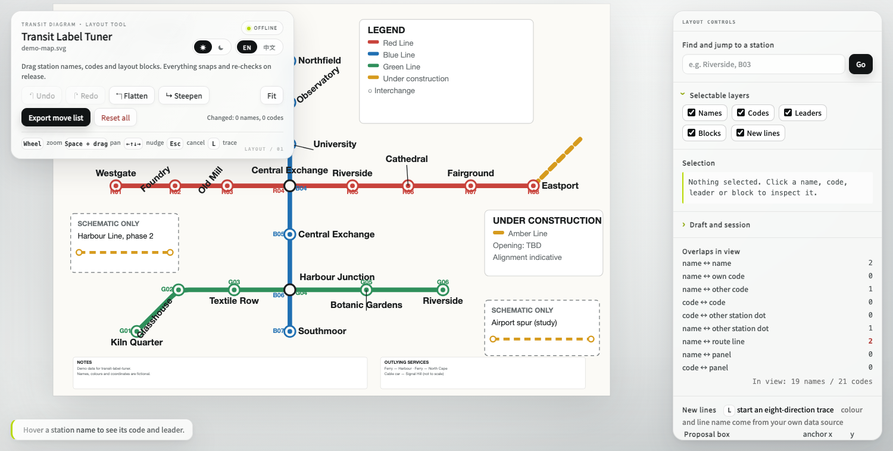

Human judgement · replayable data

01 · TUNE
Place by eye
Snap rules keep the diagram consistent.
# move-list.txt
NAME_MOVES
("Riverside", "Riverside", "R05",
0, -22, "middle", None, False, "...")
02 · REPLAY
Keep it as data
Review, diff, and apply on every redraw.